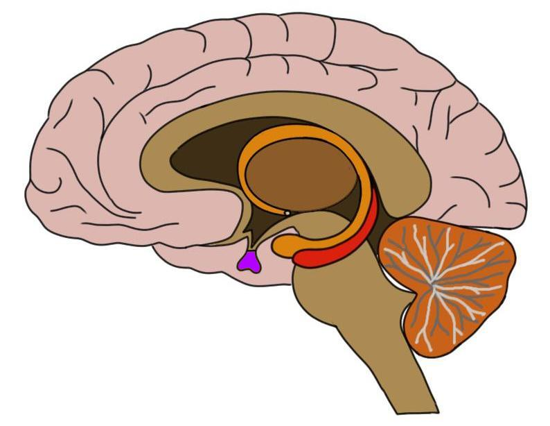

About 3,200,000,000 results (0.80 seconds)
- www.healthdirect.gov.au
- pituitary-gland

www.hypogal.com
where-is-the-pituitary-gland-located
Where Is The Pituitary Gland Located? – HypoGal Website
Pituitary Gland Hormones Prolactin – Prolactin stimulates breast milk production after childbirth. Growth hormone (GH) – Growth Hormone stimulates growth in childhood and is important to maintain a healthy body composition. Adrenocorticotropin (ACTH) – ACTH stimulates the production of cortisol by the adrenal glands. ...
www.healthline.com
human-body-maps
pituitary-gland
Pituitary Gland: Anatomy, Function, Diagram, Conditions ...
The pituitary gland is a small structure that affects many areas of your body and overall health. We’ll go over the anatomy and function of the pituitary gland, the hormones it stores ...
www.pituitary.org.uk
informations
what-is-the-pituitary-gland
What is the pituitary gland? | The Pituitary Foundation
The pituitary is an important gland in the body and it is often referred to as the 'master gland', because it controls several of the other hormone glands (e.g. adrenals, thyroid). It is usually about the size of a pea and consists of two parts (often called lobes) - a front ...
Videos

-
What is the Pituitary Gland?
-
What Is The Pituitary Gland?
-
Where is the pituitary gland located? What does it do?
-
What does the Pituitary Gland do?
-
Pituitary Gland - Human Brain Series - Part 18
www.verywellhealth.com
pituitary-gland-anatomy-4802494
Pituitary Gland: Anatomy, Function, and Treatment
Location The pituitary gland rests in a saddle-shaped depression in the middle of the sphenoid bone called the sella turcica. This butterfly-shaped, unpaired bone is located towards the front of the skull at about eye level. This places it just beneath the optic chiasm (where the optic nerves cross), the hypothalamus, as well as the front portion of a ring of arteries called the circle of Willis.
en.wikipedia.org
wiki
Pituitary_gland
Pituitary gland - Wikipedia
In vertebrate anatomy, the pituitary gland, or hypophysis, is an endocrine gland, about the size of a pea and weighing 0.5 grams (0.018 oz) in humans. It is a protrusion off the bottom of the hypothalamus at the base of the brain.The hypophysis rests upon the hypophysial fossa of the sphenoid bone in the center of the middle cranial fossa
www.thoughtco.com
pituitary-gland-anatomy-373226
Pituitary Gland - Function and Hormone Production
The pituitary gland is called the "Master Gland" because it directs a multitude of endocrine functions in the body.It regulates hormone activity in other endocrine glands and organs. Pituitary activity is regulated by hormones of the hypothalamus, a brain region connected to the pituitary by the pituitary stalk. ...
www.patient.info
hormones
pituitary-gland-disorders
Pituitary Gland Disorders | Signs, Symptoms, Treatment | Patient
The pituitary gland is one part of a messenger system. The pituitary gland helps to control your body's functions by releasing hormones into your bloodstream. These hormones are transported in your blood to their target. Here they usually cause the release of a second hormone.
www.epainassist.com
endocrine
early-warning-signs-of...
Early Warning Signs of Pituitary Gland Disorders & ...
The pituitary gland is a small organ which is located at the base of the brain. It is referred to as the master gland because it regulates and controls several endocrine glands of the body. The size of this regulating gland is that of a pea size. Pituitary gland is ...
my.clevelandclinic.org
health
body
Anterior Pituitary: What It Is & Function
Anterior Pituitary. Your anterior pituitary is one of two lobes that make up your pituitary gland, which is a small, pea-sized endocrine gland located at the base of your brain. Your anterior pituitary is responsible for creating and releasing over six different hormones that affect many different bodily processes. Appointments & Access.
www.mayoclinic.org
diseases-conditions
pituitary-tumors ...